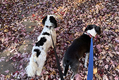

Favorite Places to Travel
Traveling is one of my favorite things to do and I've been to so many cool places. I have been to Colorado, Canada, Barbuda, Wyoming, and Montana, just to name a few.
I love flying because it is so much faster and a really cool experience. The first time I went on a plane it was the summer of fourth grade and I had just read the book "Hatchet" by Gary Paulsen. "Hatchet" is a great book but it made me terrified to go on a plane because it was about a plane crash. But once I got on the plane, I loved it!
One of my favorite trips ever is when I went to Quebec and Montreal in Canada. My dad's cousin and her family live in Canada so we went up to visit them one yea. We flew into New York and drove to Lake Placid (one of the prettiest places ever!) and stayed there for a few days. Then we went to Montreal and stayed with our family as the showed us around. Montreal is a French speaking part of Canada so my cousins are fluent in English and French! Once we left Montreal we went to Quebec and stayed in the Fairmont Le Château Frontenac which was like a castle! They had a dog that was always in the lobby named Daphney and she was adorable! After we left Canada we went to Bar Harbor, Maine for a few day and it was really fun! I went on my favorite hiking trail ever, it was called the Bee Hive Trail and you climb up the side of a mountain and there are rungs in the mountain that you climb and there wasn't an railing. After Maine we came back home, exhausted for the about 2 week trip but it is definitely one of my favorites!